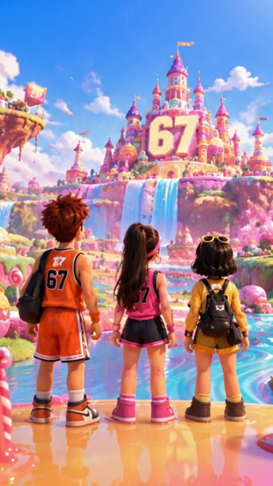

Что значит «67» и откуда взялся мем?
Коротко
«67» (произносится «сикс-севен», по-английски six seven) — сленговое восклицание без точного значения: его говорят ради самой фразы и чтобы показать, что ты «в теме». Мем вырос из трека рэпера Skrilla «Doot Doot (6 7)», который разошёлся в TikTok вместе с роликами о баскетболистах. В конце октября 2025 года Dictionary.com выбрал «67» словом года.

Что означает «67»?
Короткий ответ — почти ничего, и в этом весь смысл. Merriam-Webster описывает «six seven» как бессмысленное восклицание, которое в основном используют дети и младшие подростки.
Словарь отмечает, что фраза часто сопровождается жестом. Ладони смотрят вверх, руки по очереди двигаются вверх и вниз — как будто человек взвешивает два варианта.
Dictionary.com, который выбрал «67» словом 2025 года, признаёт, что значение у выражения «сложное». Одни используют его в смысле «так себе» или «может, так, а может, этак». Другие отвечают «шесть-семь» почти на любой вопрос.
Главная функция фразы — показать принадлежность к своим. Она работает как пароль: кто знает, тот смеётся, кто не знает, тот переспрашивает.
Сам Dictionary.com называет «67» выражением, которое «невозможно определить», и относит его к так называемому brainrot-сленгу. Так называют намеренно абсурдные слова и мемы, которые смешны именно тем, что ничего не значат.
Как правильно писать и произносить «67»?
В английском встречается несколько написаний: 67, 6 7, 6-7 и six-seven. Dictionary.com отдельно подчёркивает: число произносят как две отдельные цифры — «six seven», а не «sixty-seven».
Если сказать «шестьдесят семь», носители мема вас, скорее всего, поправят. Ошибка в произношении сразу выдаёт человека не из темы.
В русскоязычной среде говорят и «сикс-севен», и «шесть-семь». На упаковках и в соцсетях чаще всего пишут просто «67».
Откуда взялся мем «67»?
Источником считается трек «Doot Doot (6 7)» американского рэпера Skrilla. По данным Merriam-Webster и Daily Dot, песня неофициально вышла в декабре 2024 года.
Строка с «6 7» повторяется в треке, и именно она стала звуковой основой для тысяч коротких видео. Людям не нужно было знать песню целиком: хватало узнаваемого фрагмента под бит.
Что сам Skrilla вкладывал в эти цифры, однозначно сказать нельзя. В интервью Complex рэпер из Филадельфии объяснил, что для него «6-7» означает путь «от негатива к позитиву». При этом он признал, что у каждого слушателя своё толкование.
Встречаются и версии, которые связывают цифры с названием улицы. Daily Dot упоминает их как догадки, подтверждения у них нет.
При чём здесь баскетбол и ЛаМело Болл?
Вирусным мем сделали баскетбольные нарезки. В TikTok и Instagram трек Skrilla начали накладывать на видео с игроками НБА.
Особенно часто — на ролики о ЛаМело Болле. Его рост — 6 футов 7 дюймов, около 201 см. Совпадение цифр в песне и роста игрока сделало шутку понятной без объяснений.
Daily Dot в феврале 2025 года описывал одну из первых популярных нарезок. Комментатор говорит, что Болл играет как баскетболист ростом 6 футов 1–2 дюйма, хотя на самом деле в нём 6 футов 7 дюймов. В этот момент звучит строка из песни.
Дальше формат быстро оторвался от спорта. Авторы роликов стали вставлять «6-7» куда угодно: например, в шутки про 67% за экзамен.
Кто ещё помог мему распространиться?
Сам Skrilla в интервью Complex отметил роль баскетболиста Тейлена Кинни, игрока лиги Overtime Elite. По словам рэпера, Кинни подхватил фразу и жест и сыграл в их популярности большую роль.
Dictionary.com также упоминает вирусные видео с баскетболистами и мальчиком, которого в сети прозвали «67 Kid».
Важная деталь: мем распространялся не через одного автора, а через множество каналов одновременно. Трек, спортивные нарезки, школьные компании — всё это работало параллельно. Поэтому у «67» нет единой «правильной» истории происхождения.
Как «67» вышел за пределы интернета?
К осени 2025 года мем прочно закрепился офлайн, прежде всего в школах. Dictionary.com пишет, что учителя обменивались советами, как отучить учеников выкрикивать «шесть-семь» на уроках.
Стив Джонсон, директор по лексикографии Dictionary Media Group, рассказал CBS News показательную историю. Знакомая учительница средней школы однажды рано утром написала ему: «Только не делайте six seven словом года». По его словам, тогда и стало понятно, что фраза дошла до классов.
Данные подтверждают масштаб. По оценке Dictionary.com, с июня 2025 года число поисковых запросов «67» выросло более чем в шесть раз. У других двузначных чисел заметной динамики за тот же период не было.
Почему «67» стал словом года?
Dictionary.com объявил «67» словом 2025 года в конце октября. Редакция назвала выражение «лингвистической капсулой времени»: оно показывает, как новое слово за несколько месяцев распространяется по миру через поколение, выросшее в интернете.
Подробно о решении словаря и о других словах из шорт-листа — в статье почему Dictionary.com выбрал «67» словом года.
Что мем «67» значит для бизнеса?
Для розницы и дистрибуции важно одно: «67» — код, который дети и подростки узнают мгновенно. Не нужно объяснять, что значит число на упаковке: аудитория уже знает его из видео и разговоров со сверстниками.
При этом мем сам по себе не обещает продаж. Вирусные тренды приходят и уходят. Устойчивым продукт делают привычные вещи: понятный формат, понятная цена, удобное место на полке.
Именно на этом построены леденцы Six Seven: шесть вкусов, шесть узнаваемых героев, красители и ароматизаторы и стойка для кассы.